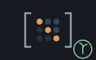
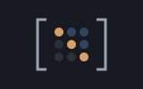

A reckoner seed: lin's linear algebra — determinants, factorisations, eigenvalues — machines/seeds/seedlin.shoddy

seedlin bridges lin's named public
surface — determinants, inverses, linear systems, echelon forms and rank,
the LU/QR/Cholesky factorisations, characteristic polynomials, eigenvalues
and the vector words — leaving the Go/Cell-suffixed single-step elimination
internals beneath each of those out, since they are not vocabulary meant
for a prompt. Per R4.16 there is no FACTOR cell at the keyboard:
LinLu, LinQr and LinEigen are each a
dict, the same shape seeddict already
established — { ("l" m) ("u" m) ("p" m) ("psign" n) },
{ ("q" m) ("r" m) } and
{ ("values" list) ("vectors" m) }. LININV,
LINSOLVE, LINADJ and LINCHOL
pre-flight the exact conditions lin.shoddy itself Errors on — not square,
singular, not symmetric — using the same predicates lin.shoddy answers with,
and refuse instead.
Linear algebra is the arithmetic where being wrong looks exactly like being right: an inverse of a singular matrix, a determinant of something that is not square, a Cholesky factor of a matrix that is not symmetric — each is a well-formed pile of numbers or an aborted session, and neither is an answer. lin.shoddy aborts on all three, which is correct for a machine and fatal for a prompt.
So LINDET, LINADJ, LININV,
LINSOLVE and LINCHOL ask the question first — and
ask it with lin's own predicates, LinIsSquare and
LinIsSym, rather than with a second opinion written here. That
matters more than it sounds: a guard that tests symmetry to a different
tolerance from the factoriser it protects would refuse matrices the machine
would have accepted, or worse, pass ones it will not.
The factorisations come back as dicts because there is no FACTOR cell at
the keyboard, and each part is then an ordinary matrix the rest of the
dictionary can multiply: DGET "l" and DGET "u"
from LINLUOF multiply back to a row-swapped original, which is
how a session checks the factorisation rather than trusting it.
A 2×2 banked in a register, then the four things anyone wants from one:
> 2 2 { 1 2 3 4 } MAT "A" STO
ok: A
[ empty ]
> "A" RCL LINDET
x: -2
> CLEAR "A" RCL LININV
x: 2x2 { { -2 1 } { 1.5 -0.5 } }
> CLEAR "A" RCL { 5 11 } LINSOLVE
x: { 1 2 }
> CLEAR "A" RCL LINRANK
x: 2Eigenvalues, two ways. LINEIGVALS brackets sign changes in
the characteristic polynomial and works on any square matrix;
LINEIGSYM wants a symmetric one and answers vectors as well.
They do not agree about order — neither promises one, and a
session that indexes into either had better read the values rather than
assume:
> 2 2 { 2 1 1 2 } MAT LINEIGVALS
x: { 1 3 }
> CLEAR 2 2 { 2 1 1 2 } MAT LINEIGSYM "values" DGET
x: { 3 1 }And the three refusals that are the seed's reason for existing, each one an abort in the machine underneath:
> 2 3 { 1 2 3 4 5 6 } MAT LINDET
?: LINDET: NEEDS A SQUARE MATRIX
> CLEAR 2 2 { 1 2 2 4 } MAT LININV
?: LININV: MATRIX IS SINGULAR - IT HAS NO INVERSE
> CLEAR 2 2 { 1 2 3 4 } MAT LINCHOL
?: LINCHOL: NEEDS A SYMMETRIC MATRIXThe vector words take plain LISTs, not matrices, so they compose with everything else on the stack:
> CLEAR { 3 4 } LINVNORM
x: 5| Word | Description |
|---|---|
| LINTRACE ( m -- n ) | The sum of the diagonal. |
| LINNORM ( m -- n ) | The Frobenius norm. |
| LINMAXABS ( m -- n ) | The largest absolute value of any entry. |
| LINISSQUARE ( m -- flag ) | Whether m has as many rows as columns. |
| LINISSYM ( m tol -- flag ) | Whether m equals its own transpose within tol. |
| LINREF ( m -- m2 ) | Row echelon form. |
| LINRREF ( m -- m2 ) | Reduced row echelon form. |
| LINRANK ( m -- n ) | The number of nonzero rows in the row echelon form. |
| LINDET ( m -- n ) | The determinant. Refuses if m is not square. |
| LINADJ ( m -- m2 ) | The adjugate. Refuses if m is not square. |
| LININV ( m -- m2 ) | The inverse. Refuses if m is not square or singular. |
| LINCHOL ( m -- m2 ) | The Cholesky factor L, where m = L * Transp(L). Refuses if m is not symmetric. |
| LINLUOF ( m -- lu ) | P A = L U: a dict with l, u, p and psign. |
| LINQROF ( m -- qr ) | A = Q R via Gram-Schmidt: a dict with q and r. |
| LINCHARPOLY ( m -- list ) | The characteristic polynomial's coefficients, highest power first. |
| LINEIGVALS ( m -- list ) | The real eigenvalues found by bracketing sign changes. |
| LINEIGSYM ( m -- eigen ) | The complete eigendecomposition of a symmetric matrix: a dict with values and vectors. |
| LINSWAPROWS ( m i j -- m2 ) | m with rows i and j exchanged. |
| LINSCALEROW ( m p k -- m2 ) | m with row p multiplied by k. |
| LINSCALECOL ( m p k -- m2 ) | m with column p multiplied by k. |
| LINCOLS ( m lo hi -- m2 ) | Columns lo through hi of m, inclusive. |
| LINAUG ( a b -- m ) | a and b side by side. Same row count required. |
| LINSOLVE ( a b -- x ) | Solves a x = b for x. Refuses if a is not square, b is the wrong length, or a is singular. |
| LINPOW ( m n -- m2 ) | m raised to the whole power n. |
| LINVNORM ( v -- n ) | The Euclidean length of v. |
| LINVUNIT ( v -- v2 ) | v scaled to length 1. Refuses on the zero vector. |
| LINCROSS ( u v -- w ) | The 3-D cross product. Refuses unless both are length 3. |
| User | How | |
|---|---|---|
| halifax | The calculator's linear-algebra words, LINTRACE through LINCROSS. |
A mill claims this seed by folding RckSeedLin over its
reckoner state, which is all halifax does.
| Machine | Why | |
|---|---|---|
 | lin | The domain this seed bridges. |
| matrix | The Matrix cell every word here reads and answers. | |
| cuttle | The Cell type every bridged word reads its arguments from and answers into. | |
| reckoner | RckReg and the argument readers every registered word is built from. | |
| seq | List plumbing under the dict converters. |